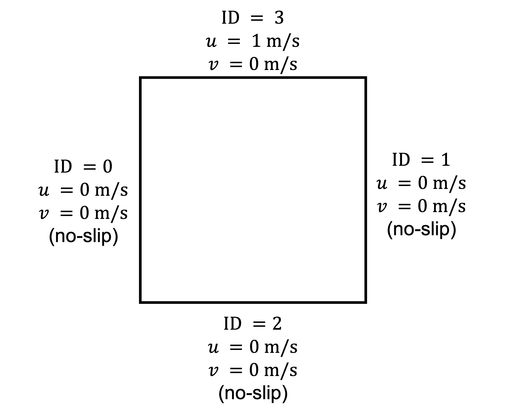
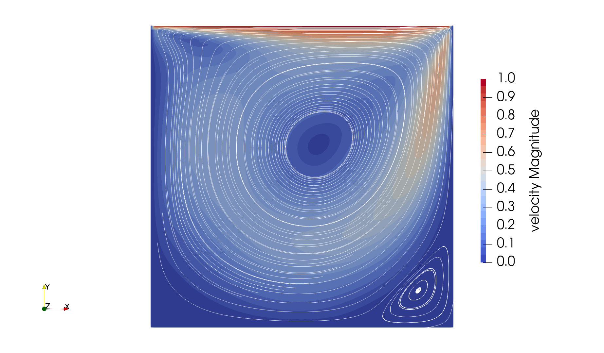
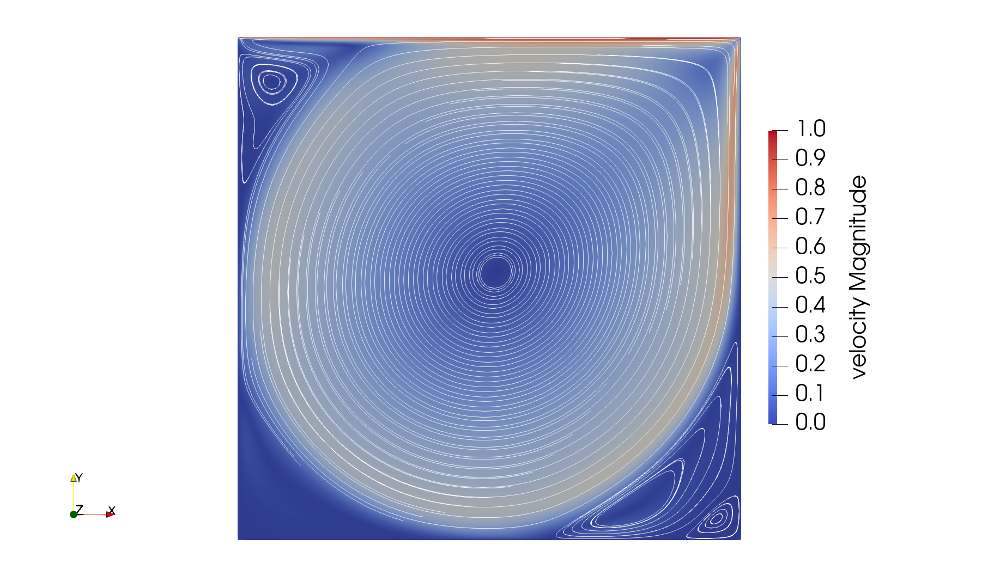
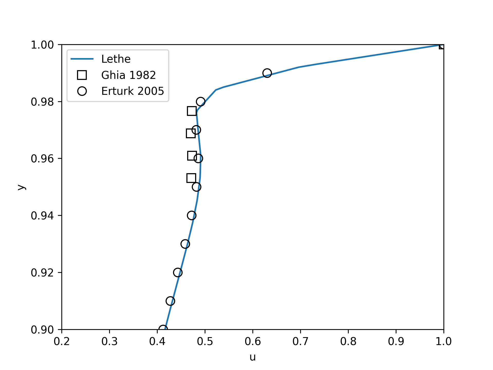
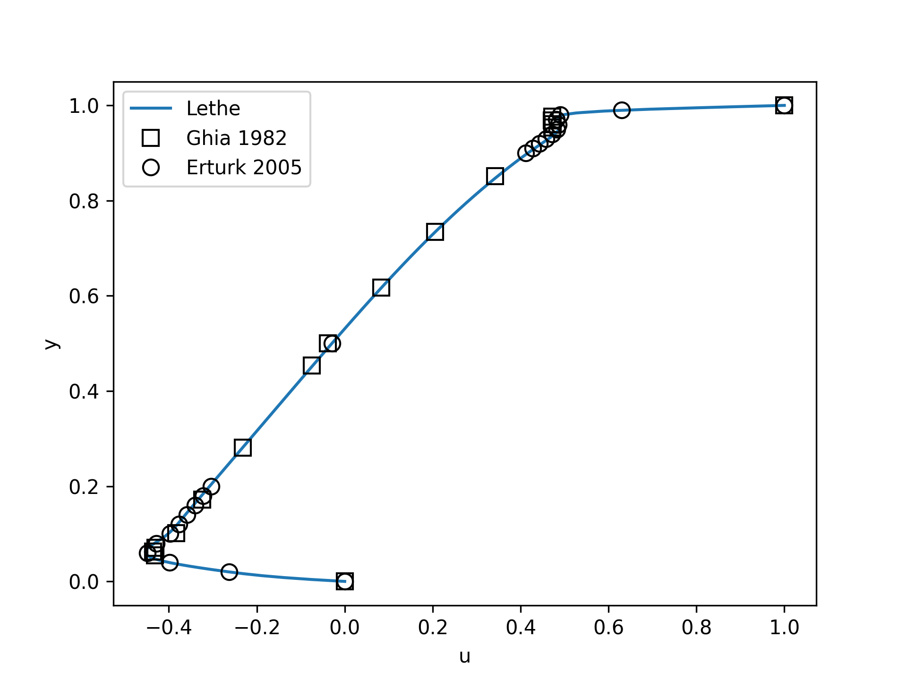

Lid-Driven Cavity Flow#
This example showcases a classical fluid mechanics problem, the lid-driven cavity. This example also introduces the concept of parameter files to parametrize Lethe simulations.
Features#
Solvers:
lethe-fluid(with Q1-Q1) orlethe-fluid-block(with Q2-Q1)Steady-state problem
Displays the use of adjoint time-stepping for steady-state problems
Files Used in This Example#
All files mentioned below are located in the example’s folder (examples/incompressible-flow/2d-lid-driven-cavity).
Base case parameter file (\(\mathrm{Re}=400\)):
cavity.prmExperimental data file from Ghia et al. (1982) [1]:
ref-2d-ghia-u.txtExperimental data file from Erturk et al. (2005) [2]:
ref-2d-erturk-u.txtHigher-Reynolds case parameter file (\(\mathrm{Re}=7500\)):
Reynolds_7500/cavity.prmPostprocessing Python script for the \(\mathrm{Re}=400\) case:
post_process_Reynolds_400.pyPostprocessing Python script for the \(\mathrm{Re}=7500\) case:
Reynolds_7500/post_process_Reynolds_7500.py
Description of the Case#
The lid-driven cavity is a classical fluid dynamics problem. It consists of a flow in an enclosed cavity, where one of the walls (in this example, the top wall) is put in motion at a constant tangential velocity. This case is often used to benchmark the capacity of CFD software because of the simplicity of its geometry and the availability of multiple reference results over a large range of Reynolds numbers. In this example, we investigate this problem in 2D, but simulating this case in 3D would require only a few changes. The geometry and boundary conditions are illustrated in the following figure:
{kind=link}
Only the upper wall boundary moves in the x direction with a constant velocity (\(u = 1 \ \text{m/s}\)) while the other boundaries are static. We will discuss later in this example the meaning of the ID of the boundary conditions used in this figure.
We first investigate this case at a Reynolds number of 400 for which a steady-state solution can be easily obtained. Later, we will increase this Reynolds number to 7500 and leverage some of the advanced functionalities of Lethe to reach a steady-state solution.
Parameter File#
Lethe simulations are controlled by parameter files which possess the extension .prm. This is the default text format of the ParameterHandler class of the deal.II library from which Lethe derives. For more information on this class, you may refer to the deal.II documentation.
Parameter files are made of subsections which describe a portion of the simulation (e.g. mesh generation, physical properties, simulation control). In parameter files, lines starting with # are comments. Parameters are set using the following syntax:
set parameter name = value
The syntax is flexible. Parameters do not need to be specified in a specific order, but only within the subsection in which they belong. For a full list of the parameters within Lethe, we refer to the parameter page.
To set-up the lid-driven cavity case, we first need to establish the mesh used for the simulation.
Mesh#
The mesh subsection specifies the computational grid:
subsection mesh
set type = dealii
set grid type = hyper_cube
set grid arguments = 0 : 1 : true
set initial refinement = 6
end
The type specifies the mesh format used. At the moment, Lethe supports two mesh formats: dealii and gmsh. dealii meshes are in-situ generated meshes for simple geometries. The type of grid generated is specified by the grid type parameters and this grid is parametrized by its grid arguments. We refer to the documentation of the deal.II GridGenerator for a detailed explanation of the available grids.
Since the lid-driven cavity problem domain is a square, we use the hyper_cube grid_type. The arguments of this grid type are the position of the bottom left corner, the position of the top right corner and the option to colorize the boundaries in order to give each of them a unique ID. The IDs will be used to set the boundary conditions on specific parts of the boundary of the domain. The ID given to each face was given in the graphical description of the case. If colorize option were set to false, all boundaries would have been given the ID 0.
It is a bit surprising that the position of the bottom left and the top right corner are specified by a single value. Since the geometry is a square, the position of the corner is specified using a single number, assuming that this identifies both the x and y value associated with that point. Other grid generators, such as the hyper_rectangle, allow for more flexibility.
The last parameter specifies the initial refinement of the grid. Most deal.II grid generators contain a minimal number of cells. For example, the hyper_cube mesh is made of a single cell. Indicating an initial refinement=6 implies that the initial mesh is refined 6 times. In 2D, each cell is divided by 4 per refinement. Consequently, the final grid is made of \(2^{(2\cdot6)}=4096\) cells.
Boundary Conditions#
The boundary conditions subsection establishes the constraints on different parts of the domain:
subsection boundary conditions
set number = 4
subsection bc 0
set id = 0
set type = noslip
end
subsection bc 1
set id = 1
set type = noslip
end
subsection bc 2
set id = 2
set type = noslip
end
subsection bc 3
set id = 3
set type = function
subsection u
set Function expression = 1
end
subsection v
set Function expression = 0
end
end
end
First, the number of boundary conditions to be applied must be specified. For each boundary condition, the id of the boundary as well as its type must be specified. The left (0), right (1) and bottom (2) walls are static and, consequently, a noslip boundary condition can be used. This boundary condition imposes \(\mathbf{u} = [0,0]^T\). For the top wall, we use the function boundary type. This type of boundary condition allows us to define the value of the velocity components using Function expression. We set \(u=1\) and \(v=0\). Note that the Function expression supports writing complex mathematical expressions which may depend on the spatial coordinates (\(x,y,z\)) and on time.
Physical Properties#
For the base case, we wish to simulate the lid-driven cavity at a Reynolds number of 400. Since the characteristic dimension of the cavity is \(L=1\) and the velocity of the top boundary is \(u=1\), the Reynolds number is \(\mathrm{Re}=\frac{1}{\nu}\) where \(\nu\) is the kinematic viscosity. The kinematic viscosity is set by the physical properties subsection:
subsection physical properties
subsection fluid 0
set kinematic viscosity = 0.0025
end
end
By default, simulations only contain a single fluid which is labeled 0.
FEM Interpolation#
Lethe supports the use of arbitrary interpolation order. The default solver for this case is lethe-fluid which uses a stabilized method and supports equal order interpolation.
We specify the interpolation order for both pressure and velocity using the FEM subsection:
subsection FEM
set velocity order = 1
set pressure order = 1
end
Warning
An alternative would be to use the lethe-fluid-block solver for which LBB stable elements must be used (e.g. Qn-Q(n-1)). Only the stabilized solver supports the use of equal order elements.
Non-linear Solver#
Lethe is an implicit CFD solver. Consequently, each time-step requires the solution of a non-linear system of equations. By default, Lethe uses a Newton solver for which a tolerance must be specified:
subsection non-linear solver
subsection fluid dynamics
set tolerance = 1e-8
set verbosity = verbose
end
end
The verbosity option specifies if details about the non-linear solver steps (residual value and iteration number) will be printed out to the terminal. By setting it to verbose, this information is printed out, whereas quiet would mute all outputs of the non-linear solver. We recommend to always set verbosity = verbose in order to monitor possible non-convergence of the solver.
Linear Solver#
Each non-linear solver step requires the solution of a linear system of equations. Lethe has multiple parameters for its linear solvers, but here, we only enable its verbosity to monitor the number of iteration per time step and use the default parameters for the rest.
Note
A good thing to remember is that, generally, linear solver parameters control the robustness of the simulation.
subsection linear solver
subsection fluid dynamics
set method = gmres
set preconditioner = amg
set verbosity = verbose
end
end
Simulation Control#
The last subsection, which is generally the one we put at the top of the parameter files, is the simulation control. In this example, it is only used to specify the name of the output files:
subsection simulation control
set method = steady
set output name = output_cavity
end
Running the Simulations#
Launching the simulation is as simple as specifying the executable name and the parameter file. Assuming that the lethe-fluid executable is within your path, the simulation can be launched by typing:
Lethe will generate a number of files. The most important one bears the extension .pvd. It can be read by popular visualization programs such as Paraview.
Results and Discussion#
Base Case (\(\mathrm{Re}=400\))#
Using Paraview, the steady-state velocity profile and the streamlines can be visualized:
It is also very interesting to compare the results with those obtained in the literature. A python script provided in the example folder allows to compare the velocity profile along de y axis for \(x=0.5\) with results from the literature. Using this script, the following resuts are obtained for initial refinement = 6
We note that the agreement is perfect. This is not surprising, especially considering that these results were obtained at a relatively low Reynolds number.
Note
The vtu files generated by Lethe are compressed archives. Consequently, they cannot be postprocessed directly. Although they can be easily post-processed using Paraview, it is sometimes necessary to be able to work with the raw data. The python library PyVista allows us to do this.
Higher-Reynolds Case (\(\mathrm{Re}=7500\))#
We now consider the case at a Reynolds number of 7500. At this value of the Reynolds number, the steady solver will generally not converge as the problem is too non-linear (or too stiff). A workaround for this issue is to use an adjoint time-stepping strategy. This strategy consists in transforming the steady-state problem into a transient problem and to use an increasingly large time-step to reach a steady-state solution. This method is called steady_bdf in Lethe.
It can be used by modifying the simulation control subsection:
subsection simulation control
set method = steady_bdf
set adapt = true
set max cfl = 1000
set stop tolerance = 1e-6
set adaptative time step scaling = 1.1
set time step = 0.001
end
The adapt parameter allows dynamic time-step adaptation. This feature is also used in transient simulations to carry simulations at a constant CFL number. The max cfl controls the maximum value of the CFL reached during the simulation. Remember that Lethe is an implicit solver and, as such, can theoretically manage absurdly large values of the CFL. The stop-tolerance controls the initial tolerance of a time-step below which steady-state will be considered reached. The time step controls the initial value of the time step and, finally, the adaptative time step scaling controls the rate of increase of the time step. The increase of the time step follows:
where \(\alpha\) is the adaptative time step scaling .
We first carry out the simulations with an initial refinement 7. Using Paraview, the steady-state velocity profile and the streamlines can be visualized:
We see that new recirculation regions occur in the flow.
Using a similar python script, we can compare the results obtained with those from the literature. We note that there is quite a good agreement with the results from the literature, even in the top region where the velocity field changes abruptly.
Increasing the number of cells by a factor 4 (to \(\approx\) 65k cells) allows for an even slightly better agreement.
Possibilities for Extension#
Validate at even higher Reynolds numbers: The Erturk [2] data within the example investigates this case up to a Reynolds number of 20000. It is an interesting exercise to simulate these more complex cases using the adjoint time-stepping
steady_bdfscheme.High-order methods: Lethe supports higher order interpolation. This can yield much better results with an equal number of degrees of freedom than traditional second-order (Q1-Q1) methods, especially at higher Reynolds numbers.
Dynamic mesh adaptation: Lethe supports dynamic mesh adaptation. Running this case with dynamic mesh adaptation could potentially yield better results.